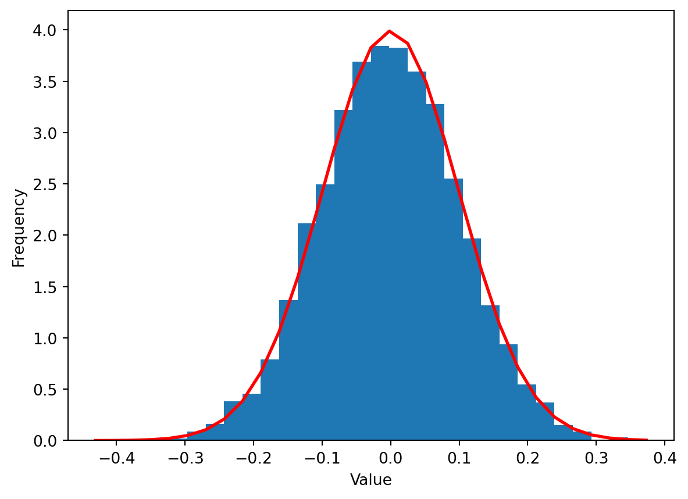
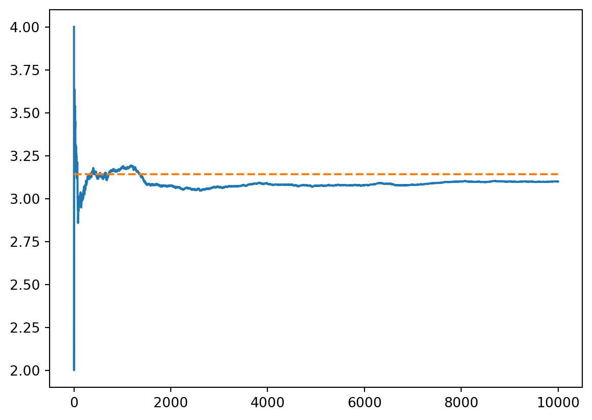

Many physical phenomena, notably those falling within the domains of statistical mechanics and quantum theory, depend in an essential way on randomness. The simulation of these phenomena therefore requires algorithms that incorporate random (or pseudo-random) elements in the most efficient way.
1 Sampling from a distribution
Let’s suppose that we have a source of samples of a real valued random variable \(X\) that follows a particular probability density function \(p_X\)1. This means that the probability of drawing a sample in the region \([x, x+dx]\) is \(p_X(x)dx\). If we now map the samples using a function \(f\), what is the probability density \(p_Y\) of \(y=f(x)\)? The new probability density is defined in just the same way: the probability of \(y\) lying in the region \([y, y+dy]\) is \(p_Y(y)dy\). Since \(x\) is being mapped deterministically to \(y\) these two probabilities are therefore the same
This formula shows that we can create samples from an arbitrary probability distribution by choosing an invertible map \(f\) appropriately. If \(p_X\) is a standard uniform distribution on \([0,1]\) then \(f(x)\) is the inverse of the cummulative probability distribution of \(Y\) i.e.
\[
f^{-1}(y) = \int^y_{-\infty} p_Y(y')dy'
\]
The same approach works in higher dimensions: \(\big\lvert \frac{dx}{dy}\big\rvert\) is replaced by the inverse of the Jacobian determinant.
The Box–Muller transform is one example of this idea. Take two independent samples from a standard uniform distribution \(u_{1,2}\) and form
\[
\begin{align}
x &= \sqrt{-2\log u_1}\cos(2\pi u_2)\\
y &= \sqrt{-2\log u_1}\sin(2\pi u_2).
\end{align}
\]
Various functions are available in the numpy.random module to generate random arrays drawn from a variety of distributions. Box–Muller has now been retired in favour of the Ziggurat algorithm.
import numpy.random as randomimport numpy as npimport matplotlib.pyplot as pltmu, sigma =0, 0.1# mean and standard deviations = random.normal(mu, sigma, size=10000)count, bins, ignored = plt.hist(s, 30, density=True)plt.plot(bins, 1/(sigma * np.sqrt(2* np.pi)) * np.exp( - (bins - mu)**2/ (2* sigma**2) ), linewidth=2, color='r')plt.xlabel("Value")plt.ylabel("Frequency")plt.show()

For complex multivariate (i.e. high dimensional) distributions there is no general recipe to construct an appropriate \(f\). One very recent application of these ideas is in machine learning models called normalizing flows that use a mapping \(f\) parameterized by a neural network. The workhorse for sampling from complicated distributions is Markov chain Monte Carlo, as we discuss in Section 2.3.
2 The Monte Carlo method
Monte Carlo is the general prefix applied to variety of numerical methods that use randomness in some way. Two of the main classes of problem encountered in physics that come under this heading are:
Interpret a numerical evaluation as an expectation value of some random variable and use sampling to estimate it. Monte Carlo integration is an example of this idea.
Sampling from a complex probability distribution (which may include taking expectation values). Example: Markov chain Monte Carlo.
2.1 Monte Carlo integration
The technique is exemplified by the following fairly dumb way of estimating \(\pi\)
max_samples =10000inside =0areas = []for sample inrange(1, max_samples +1): x = random.uniform(-1, 1) y = random.uniform(-1, 1)if x **2+ y **2<=1: inside +=1 areas.append(4* inside / sample)plt.plot(np.arange(1, max_samples +1), areas)plt.plot(np.arange(1, max_samples +1), np.pi * np.ones(max_samples), linestyle='dashed')plt.show()

In terms of integration, you can think of this as a way to compute the integral of a function which is one inside the unit disc, and zero outside it.
Although it’s a silly method, this does illustrate one important feature of Monte Carlo methods in general: that the relative error with \(N\) samples is typically \(\propto N^{-1/2}\) (thus at the 1% level for \(10^4\) samples) because the variance of a sum of \(N\)iid variables is \(\propto N^{1/2}\).
The general setting of Monte Carlo integration is as follows. Suppose we have a multidimensional integral to evaluate over some domain \(D\)
\[
I(f,D) = \int_D f(\mathbf{x}) d\mathbf{x}
\]
If we can sample points uniformly within \(D\), then an estimate for the integral is
where \(N\) is the number of samples and \(V_D\) is the (hyper-)volume of \(D\). Why does this work? Because the uniform distribution has constant probability density \(1/V_D\) so the average of \(f(\mathbf{x}_i)\) with respect to this uniform distribution is simply related to the integral we are trying to calculate
\[
\bar f = \frac{1}{V_D}\int f(\mathbf{x})d\mathbf{x}.
\]
By taking many samples and averaging \(f(\mathbf{x}_i)\) we can estimate this average. In the simple example that we started with \(f(\mathbf{x})\) would be a “top hat” function that is one inside the circle. As in that example, the relative error is \(\propto N^{-1/2}\), whatever the dimension.
For this reason Monte Carlo integration comes into its own for high dimensional problems. For low dimensional integrals the quadrature methods in scipy.integrate are preferable:
from scipy import integrateintegrate.quadrature(np.cos, 0, np.pi /2)
(0.9999999999999536, 3.9611425250996035e-11)
As for ODE solvers, there is a lot of detail in the implementation to do with how intervals are chosen, and so on.
2.2 Importance sampling
Monte Carlo integration is not restricted to sampling from the uniform distribution. If our function \(f(\mathbf{x})\) has regions where it is very small, there is not much point in sampling its value there. If there is a distribution we can sample from where samples tend to fall in the region where \(f(\mathbf{x})\) is large, it will probably be better to use that. In this case we calculate the weighted average using the probability density \(p_\text{sample}(\mathbf{x})\) from where the samples are drawn
The benefit of this approach is that it can lead to a drastic reduction in the variance of the estimator. To take an extreme example: if \(f(\mathbf{x})\propto p_\text{sample}(\mathbf{x})\), and even a single sample leads to perfect estimate with no uncertainty! This observation is not useful, if you knew \(p_\text{sample}(\mathbf{x})\) you would know the constant factor by which \(f(\mathbf{x})\) differs, but it illustrates the point about variance reduction.
This general technique is called Importance sampling. To apply the above approach, one needs both an explicit form for \(p_\text{sample}(\mathbf{x})\) and the ability to generate samples, which is rather restrictive. There are many elaborations of the basic idea, however, including multiple distributions as well as adaptive sampling to “discover” the right region for sampling.
2.3 Markov chain Monte Carlo
Suppose you want to generate configurations at random (i.e. with a uniform distribution) from a “gas” of hard disks 2.
Coins in a shoe box (gas of hard disks). From Krauth (1998)
It’s harder than it looks! The first guess you might have is to start adding coins at random, and if you get an overlap, try again until you don’t. Obviously this will become inefficient as the box fills up, and most attempts fail. Worse, it doesn’t in fact yield a uniform distribution!3
Here’s an approach that works:
Example 1 (Metropolis algorithm for hard disks)
Fix the number of disks and an initial configuration (some regular lattice configuration, say).
Pick a disk at random and attempt (or propose) to move it by a small random amount (i.e. random direction; random small magnitude).
If this results in the moved disk intersecting another, reject the move, leaving the disk where it is. Otherwise, accept the move.
Repeat 2. and 3. many times.
.
This is the simplest example of the Metropolis–Hastings algorithm, the first Markov chain Monte Carlo (MCMC) algorithm.
More generally, the goal of MCMC is to come up with a sequential random process (a Markov chain) that generates (usually after many steps) a sample from a particular distribution.
You’ve all heard of a random walk, perhaps as a model for diffusion. At each step you make a move in a random direction, independently of your earlier moves. After many steps these random moves gives rise to a distribution of possible locations. A random walk is the simplest example of a Markov chain.
More generally, a Markov chain is a sequence of random variables \(X_n\) with each having a distribution that is is conditional on the value of the previous one, and so is defined in terms of transition probabilities\(p(X_{n}=x_n|X_{n-1}=x_{n-1})\) (hence they form a “chain”). I’m going to immediately drop this cumbersome notation in favour of \(p(x_n|x_{n-1})\), a function of \(x_n\) and \(x_{n-1}\), but in general the function giving the transition probabilities can be different at each step (the random variables could all be different).
The probability of a particular sequence \(X_1=x_1\ldots X_n=x_n\) is therefore
\(X_1\) has no “parent” so is not conditional on any other value.
Suppose we don’t care about the earlier values and just want to know the marginal distribution\(p^{(n)}(x_n)\) of the final variable. For a random walk this is easy, as \(x_n\) typically represents a displacement that is a sum of iid increments. In general this is not the case, however, as the marginal distribution is
(I’m writing all these expressions for discrete random variables, but the continuous version involving probability density functions is straightforward)
The sums are over all possible values that the random variables might take in the state space of the problem. These could be finite or infinite in number.
Things are not as bad as they appear, however, as the marginal distribution can be interpreted as the result of acting \(n-1\) times on the vector of values of \(p^{(1)}_j\equiv p^{(1)}(j)\) with the transition matrix with elements \(\mathsf{P}_{jk}=p(j|k)\)
Although \(p^{(n)}\) — the probability distribution at the \(n\)th step — changes from step to step, you might expect that after many steps it tends to converge to a stationary distribution\(p^{(n)}\to\boldsymbol{\pi}\). If it exists, this distribution must satisfy
In other words, it is an eigenvector of \(\mathsf{P}\) with eigenvalue one. This property is guaranteed by the Perron–Frobenius theorem4.
Thus \(\mathsf{P}\) determines \(\boldsymbol{\pi}\). MCMC turns this idea on its head and asks: if there is some \(\boldsymbol{\pi}\) that I would like to generate samples from, can I find a \(\mathsf{P}\) that has it as a stationary distribution?
There is a trivial answer to this question. Sure, take \(\mathsf{P}_{jk}=\boldsymbol{\pi}_j\). That is, jump straight to the stationary distribution no matter what the starting state. But we are interested in highly complicated distributions over large state spaces (think the Boltzmann distribution for a statistical mechanical system comprised of billions of particles). Thus what we really want is to be able to approach such a complicated distribution by making many transitions with simple distributions.
One more idea is useful before returning to concrete algorithms. The quantity
\[
\mathsf{P}_{jk}\pi_k = p(j|k)\pi_k = p(j,k)
\]
is the joint distribution of seeing state \(k\) followed by state \(j\) in the stationary distribution. A reversible Markov chain is one where \(p(j,k)=p(k,j)\). Roughly, you can’t tell the direction of time because any transition is equally likely to happen forward in time as backward. Random physical processes that respect time reversal symmetry are often modeled as reversible Markov processes.
Combining reversibility with the definition of the stationary state yields the condition of detailed balance
This condition is stronger than the condition Equation 1 for a stationary state. This makes it easier to check: you don’t have to do a sum over a state space index. The Metropolis algorithm Example 1 for the hard disk problem satisfies detailed balance for a stationary distribution that is constant when disks don’t intersect and zero when they do.
When the stationary distribution \(\boldsymbol{\pi}\) has more structure, designing an appropriate transition matrix is harder. The idea is to generalize the hard disk approach by separating the transition into a proposal distribution \(p_\text{prop}(j|k)\) and an acceptance distribution \(p_\text{acc}(a=0,1|j\leftarrow k)\) that gives the probability of a move from \(k\) to \(j\) being accepted (\(a=1\)) or rejected (\(a=0\)). The probability of moving from \(k\) to \(j\) is then
This gives an extremely general algorithm, one of the top ten in applied mathematics, according to one list:
Example 2 (Metropolis algorithm)
Starting from state \(k\) sample a next state \(j\) from the proposal distribution \(p_\text{prop}(j|k)\).
Accept the proposal with probability \(p_\text{acc}(a=1|j \leftarrow k)\) and move to state \(j\). Otherwise reject the proposal and stay in state \(k\).
Repeat 1. and 2. many times.
MCMC has the benefit of being embarrassingly parallel. If you want to average something over \(\boldsymbol{\pi}\), just run the algorithm many times independently and average the results. This is perfect for parallel computing.
The Metropolis algorithm has an Achilles’ heel, however. To perform a move one has to sample from \(p_\text{prop}(j|k)\) and from \(p_\text{acc}(a|j \leftarrow k)\). The proposal therefore has to be tractable, like the small shift in position for the hard disk case. This may however, mean that that many of the \(j\)s suggested correspond to very small \(\pi_j\), and therefore a very low acceptance probability (c.f. Equation 3). For example, in the hard disk case at high density many proposed moves will give rise to overlap of disks and be rejected. This means that many steps are required to have one successful update of the simulation. This kind of slowdown is a common feature of MCMC methods applied to complex distributions.
We’ll see some more examples of MCMC algorithms for statistical mechanical problems in Section 3, and ways in which this problem can be avoided.
3 Statistical mechanics
Statistical mechanics is a natural source of such complex distributions in physics. Remember the fundamental principle that the probability of finding a statistical mechanical system in a microstate \(\mathbf{x}\)5 with energy \(\mathcal{E}(\mathbf{x})\) is
where \(Z\) is a normalizing constant called the partition function and \(\beta=1/k_\text{B}T\), where \(T\) is the temperature and \(k_\text{B}\) is Boltzmann’s constant.
The central problem of statistical mechanics is computing ensemble averages of physical quantities, and the principal difficulty is the intractability of those averages for large systems. For example, if we are dealing with a classical gas, the configuration space point \(\mathbf{x}\) corresponds to the positions of each of the gas molecules \(\mathbf{x}=(\mathbf{x}_1,\ldots \mathbf{x}_N)\) and an average is a \(3N\)-dimensional integral. The only situation in which this integral is tractable is when the gas is noninteracting (ideal), in which case the energy function takes the form
where \(\mathcal{E}_1(\mathbf{x})\) is the single particle energy. In this case the integral factorizes. As soon as we introduce interactions between particles of the form
things get a lot harder. The same issue arises in models involving discrete random variables. The canonical example is the Ising model, in which a configuration corresponds to fixing the values of \(N\) “spins” \(\sigma_n=\pm 1\) with an energy function of the form
The two terms correspond to a (magnetic) field that acts on each spin and a coupling between spins. As in the gas, it’s the latter that causes problems / interest.
The Ising model comes in a great many flavours according to how the fields and couplings are chosen. They may reflect a lattice structure: \(J_{mn}\neq 0\) for nearest neighbours, say, or longer range. They may be fixed or random, defining an ensemble of models.
The most pessimistic assessment is that to calculate an average we are going to have sum over \(2^N\) configurations. Computing the partition function \(Z\) that normalizes the average (or which gives the free energy via \(F=-k_\text{B}T\log Z\)) is another such sum.
Monte Carlo simulation is a much more attractive alternative. MCMC can be used to generate samples from \(p(\sigma)\) which are then used to estimate the averages of interest (e.g. average energy \(\langle\mathcal{E}(\sigma)\rangle\), average magnetization \(\langle\sum_n \sigma_n\rangle\), etc.).
3.1 MCMC updates for the Ising model
How does MCMC work in practice for the Ising model? To apply the Metropolis alogorithm Example 2 we can use a simple proposal: pick each spin in turn in some order and try to flip it.
The form of \(p(\sigma)\) means that, although we cannot compute the probabilities explicitly, we can calculate ratios, which is all we need for Metropolis. For two configurations that differ only by \(\sigma_n=\pm 1\) we have
where \(\Delta \mathcal{E}\) is the energy difference between two configurations.
One alternative to Metropolis is the Heat bath algorithm (or Glauber dynamics or Gibbs sampling) 6. The idea behind the name is that, since we can calculate the influence of the spin’s environment (the “bath”), we can just choose the spin’s orientation with the corresponding probabilities. Since there are only two probabilities the ratio is all we need and we get
Compute \(\Delta E\), the energy difference between \(\sigma_n=\pm 1\).
Set \(\sigma_n=\pm 1\) with probabilities given by Equation 5.
Repeat 1-3 many times
What happens if we try and come up with more complicated proposals, flipping many spins at once? For Metropolis, the problem is that without a cleverly designed proposal we will be suggesting moves that are likely to be rejected. For the heat bath algorithm, the more spins we flip, the more complicated the evaluation of the corresponding probabilities (\(2^n\) outcomes if we flip \(n\) spins).
The good news is that we can do better — much better — than the above algorithms. The Wolff algorithm is one example. This proposes a cluster of spins of the same orientation to be flipped by adding adjacent spins to an initially random chosen spin with probability \(p_\text{add}\). It turns out that for the nearest neighbour Ising model with Ferromagnetic coupling \(J<0\) the “magic” value \(p_\text{add}=1-e^{2\beta J}\) is rejection free: the probability to flip the whole cluster is always one. This makes for an extremely fast algorithm that is not subject to the usual critical slowing down at phase transitions.
Figure 1: Glauber dynamics, Block Gibbs sampling and Wolff updates compared. Change the temperature using the slider. The centre of the slider corresponds to the critical temperature \(k_\text{B}T = 2|J|/\log(1+\sqrt{2})\sim 2.269|J|\).
4 The universe of Monte Carlo methods
Monte Carlo simulation is a vast field with practitioners and specialists across the natural sciences, engineering, machine learning, and statistics. In this section I’ll mention a few important topics to give a taste of what’s out there. For much more detail take a look at Krauth (2006) and / or MacKay (2003). The recent set of lectures Monte Carlo Techniques by Timothy Budd also look fantastic.
References
Krauth, Werner. 1998. “Introduction to Monte Carlo Algorithms.” In Advances in Computer Simulation, 1–35. Springer.
MacKay, David JC. 2003. Information Theory, Inference and Learning Algorithms. Cambridge university press.
Metropolis, Nicholas, Arianna W Rosenbluth, Marshall N Rosenbluth, Augusta H Teller, and Edward Teller. 1953. “Equation of State Calculations by Fast Computing Machines.”The Journal of Chemical Physics 21 (6): 1087–92.
This is in fact the original motivation for the development of the technique, see Metropolis et al. (1953).↩︎
For a discussion of what goes wrong in a simple discrete model of rods in 1D, see Section 2.2.1 of Krauth (2006). ↩︎
There is an important caveat. If there are two or more subsets of the state space that are not connected by finite transition probabilities, the probability distribution in each subset evolves independently and there is not a unique stationary distribution. When there is, we say that the Markov chain is ergodic and the corresponding transition matrix is irreducible.↩︎
For a classical gas of point particles this would correspond to specifying all the positions and velocities, for example.↩︎
Multiple names are sign that a technique was re-discovered by different communities who don’t talk to each other.↩︎
This can be done deterministically (e.g. sequentially or in alternating blocks when the model is defined on a bipartite graph) — which is what is normally called Gibbs sampling — or at random, which corresponds to Glauber dynamics.↩︎
 .
.